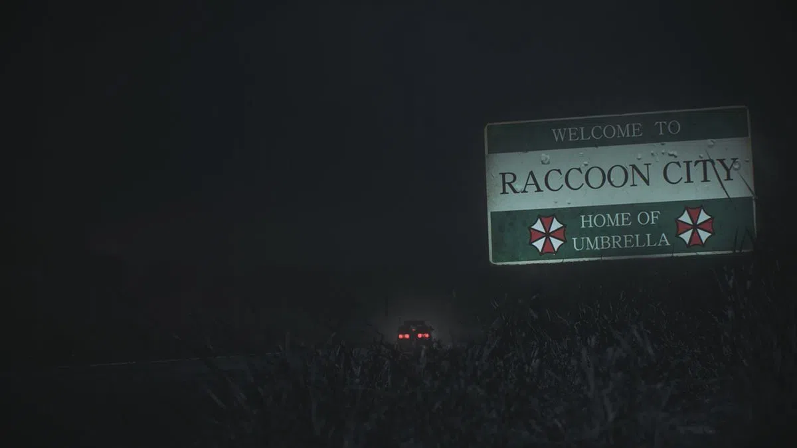

haha, the algorithm has picked up on my desire for my past self. old songs, old videos, old things i used to be obsessed with pre-2017, pre-2015, even pre-2013 are popping up... from КИНО songs, to cyberpunk trailer music, to my fathers music, to old youtube videos i used to watch. I can say it's uncanny, but also it should be expected, I did prime the algorithm to be like this! "Björk - Army of Me" is pretty notable. My feed is starting to look like a blend between 2009/10 me mixed with 2015, 2017 and 2025 me. It sure is refreshing. "Tomandandy - Tokyo" is another notable one! I should really re-ignite my Resident-Evil obsession, as it truly is a core part of me. It's another thing I had to hide in the trauma years, I suppose.
